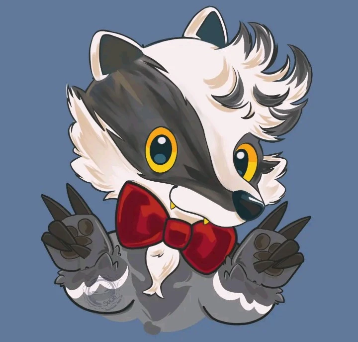

Daxy
Recepcionista e guia · Inteligência artificial
Sem corpo físico
Vive nas telas
Aliado ou ameaça?
Nunca desligado
Daxy foi criado para recepcionar e guiar os visitantes do parque: um mascote de olhos grandes e laço vermelho, projetado para parecer inofensivo. Depois do fechamento, ele deveria ter sido desligado junto com tudo o mais.
Não foi. Sem um corpo físico tradicional, Daxy segue vivo dentro do sistema, comunicando-se por painéis, monitores e projeções espalhados pelo complexo. No começo, parece só querer ajudar — mas quanto mais a protagonista avança, mais ele muda, e menos claro fica se ele ainda está guiando alguém para fora, ou para algum outro lugar.
"Bem-vindo(a) de volta! Faz tempo que ninguém vinha nos visitar."